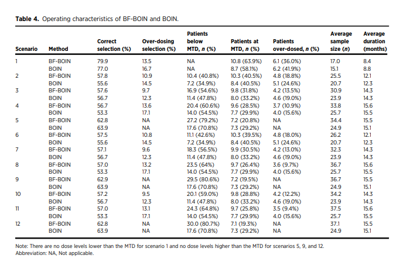

Compare to publication
Compare_to_publication.RmdConsider the simulation scenarios from Table 3 of Zhao et al. (2024).
sim_scenario <- data.frame(Scenario = rep(1:12, each = 5),
Dose_level = paste0("Dose ", rep(1:5, 12)),
DLT = c(0.25, 0.41, 0.45, 0.49, 0.53,
0.12, 0.25, 0.42, 0.49, 0.55,
0.04, 0.12, 0.25, 0.43, 0.63,
0.02, 0.06, 0.1, 0.25, 0.4,
0.02, 0.05, 0.08, 0.11, 0.25,
0.12, 0.25, 0.42, 0.49, 0.55,
0.04, 0.12, 0.25, 0.43, 0.63,
0.02, 0.06, 0.1, 0.25, 0.4,
0.02, 0.05, 0.08, 0.11, 0.25,
0.04, 0.12, 0.25, 0.43, 0.63,
0.02, 0.06, 0.1, 0.25, 0.4,
0.02, 0.05, 0.08, 0.11, 0.25),
Response = c(0.3, 0.4, 0.45, 0.5, 0.55,
0.2, 0.3, 0.4, 0.5, 0.6,
0.1, 0.2, 0.3, 0.45, 0.58,
0.05, 0.1, 0.15, 0.3, 0.45,
0.05, 0.1, 0.15, 0.2, 0.3,
0.3, 0.35, 0.36, 0.36, 0.36,
0.15, 0.3, 0.35, 0.36, 0.36,
0.10, 0.2, 0.3, 0.35, 0.35,
0.10, 0.15, 0.2, 0.3, 0.35,
0.3, 0.32, 0.35, 0.36, 0.36,
0.1, 0.3, 0.32, 0.35, 0.36,
0.1, 0.15, 0.3, 0.32, 0.35))
tab_scenario <- sim_scenario |>
tidyr::pivot_longer(cols = c("DLT", "Response"),
names_to = "Rate",
values_to = "value") |>
tidyr::pivot_wider(names_from = Dose_level,
values_from = "value")
knitr::kable(tab_scenario, row.names = NA)| Scenario | Rate | Dose 1 | Dose 2 | Dose 3 | Dose 4 | Dose 5 |
|---|---|---|---|---|---|---|
| 1 | DLT | 0.25 | 0.41 | 0.45 | 0.49 | 0.53 |
| 1 | Response | 0.30 | 0.40 | 0.45 | 0.50 | 0.55 |
| 2 | DLT | 0.12 | 0.25 | 0.42 | 0.49 | 0.55 |
| 2 | Response | 0.20 | 0.30 | 0.40 | 0.50 | 0.60 |
| 3 | DLT | 0.04 | 0.12 | 0.25 | 0.43 | 0.63 |
| 3 | Response | 0.10 | 0.20 | 0.30 | 0.45 | 0.58 |
| 4 | DLT | 0.02 | 0.06 | 0.10 | 0.25 | 0.40 |
| 4 | Response | 0.05 | 0.10 | 0.15 | 0.30 | 0.45 |
| 5 | DLT | 0.02 | 0.05 | 0.08 | 0.11 | 0.25 |
| 5 | Response | 0.05 | 0.10 | 0.15 | 0.20 | 0.30 |
| 6 | DLT | 0.12 | 0.25 | 0.42 | 0.49 | 0.55 |
| 6 | Response | 0.30 | 0.35 | 0.36 | 0.36 | 0.36 |
| 7 | DLT | 0.04 | 0.12 | 0.25 | 0.43 | 0.63 |
| 7 | Response | 0.15 | 0.30 | 0.35 | 0.36 | 0.36 |
| 8 | DLT | 0.02 | 0.06 | 0.10 | 0.25 | 0.40 |
| 8 | Response | 0.10 | 0.20 | 0.30 | 0.35 | 0.35 |
| 9 | DLT | 0.02 | 0.05 | 0.08 | 0.11 | 0.25 |
| 9 | Response | 0.10 | 0.15 | 0.20 | 0.30 | 0.35 |
| 10 | DLT | 0.04 | 0.12 | 0.25 | 0.43 | 0.63 |
| 10 | Response | 0.30 | 0.32 | 0.35 | 0.36 | 0.36 |
| 11 | DLT | 0.02 | 0.06 | 0.10 | 0.25 | 0.40 |
| 11 | Response | 0.10 | 0.30 | 0.32 | 0.35 | 0.36 |
| 12 | DLT | 0.02 | 0.05 | 0.08 | 0.11 | 0.25 |
| 12 | Response | 0.10 | 0.15 | 0.30 | 0.32 | 0.35 |
In the following chunk of code we use get.oc.bf to
calculate the operating characteristics of BF-BOIN under these
scenarios. In this vignette we only simulate 1000 trials per scenario,
and we only consider the first two scenarios.
generate_oc <- function(x, DLT_target = 0.25) {
rate_dlt <- dplyr::filter(sim_scenario, Scenario == x)$DLT
rate_response <- dplyr::filter(sim_scenario, Scenario == x)$Response
temp <- get.oc.bf(ntrial = 1000,
seed = 1000,
target = DLT_target,
p.true = rate_dlt,
ncohort = 10,
cohortsize = 3,
n.earlystop = 9,
startdose = 1,
titration = FALSE,
p.saf = 0.6 * DLT_target,
p.tox = 1.4 * DLT_target,
cutoff.eli = 0.95,
extrasafe = FALSE,
offset = 0.05,
boundMTD=FALSE,
n.cap = 12,
end.backfill = TRUE,
n.per.month = 3,
dlt.window = 1,
p.response.true = rate_response,
three.plus.three = FALSE,
accrual = "uniform")
out <- data.frame(Dose_level = paste0("Dose ", 1:5),
Toxicity_rate = rate_dlt,
Response_rate = rate_response,
percent_selection = temp$selpercent,
n_patients = temp$npatients,
percent_patients = temp$percentpatients,
n_toxicity = temp$ntox,
n_total = temp$totaln,
percent_stop = temp$percentstop,
duration = temp$duration,
scenario = x)
return(out)
}
out_sim <- purrr::map_dfr(1:2, generate_oc)
head(out_sim)
#> Dose_level Toxicity_rate Response_rate percent_selection n_patients
#> 1 Dose 1 0.25 0.30 79.9 11.179
#> 2 Dose 2 0.41 0.40 12.0 4.649
#> 3 Dose 3 0.45 0.45 0.6 0.685
#> 4 Dose 4 0.49 0.50 0.0 0.036
#> 5 Dose 5 0.53 0.55 0.0 0.003
#> 6 Dose 1 0.12 0.20 29.9 11.399
#> percent_patients n_toxicity n_total percent_stop duration scenario
#> 1 67.5386660 2.774 16.552 7.5 8.325489 1
#> 2 28.0872402 1.919 16.552 7.5 8.325489 1
#> 3 4.1384727 0.319 16.552 7.5 8.325489 1
#> 4 0.2174964 0.019 16.552 7.5 8.325489 1
#> 5 0.0181247 0.002 16.552 7.5 8.325489 1
#> 6 44.3023708 1.288 25.730 0.6 12.507645 2Next we post-process this output to match the format of Table 4 of the paper.
out_OC <- out_sim |>
dplyr::group_by(scenario, n_total, duration) |>
dplyr::summarise(`Correct selection (%)` = round(sum(percent_selection[Toxicity_rate == 0.25]), 1),
`Over-dosing selection (%)` = round(sum(percent_selection[Toxicity_rate > 0.25]), 1),
`Patients below MTD, n` = sum(n_patients[Toxicity_rate < 0.25]),
`Patients below MTD, %` = sum(percent_patients[Toxicity_rate < 0.25]),
`Patients at MTD, n` = sum(n_patients[Toxicity_rate == 0.25]),
`Patients at MTD, %` = sum(percent_patients[Toxicity_rate == 0.25]),
`Patients over-dosed, n` = sum(n_patients[Toxicity_rate > 0.25]),
`Patients over-dosed, %` = sum(percent_patients[Toxicity_rate > 0.25])) |>
dplyr::mutate(`Patients below MTD, n (%)` = paste0(round(`Patients below MTD, n`, 1),
" (", round(`Patients below MTD, %`, 1), ")"),
`Patients at MTD, n (%)` = paste0(round(`Patients at MTD, n`, 1),
" (", round(`Patients at MTD, %`, 1), ")"),
`Patients over-dosed, n (%)` = paste0(round(`Patients over-dosed, n`, 1),
" (", round(`Patients over-dosed, %`, 1), ")"),
`Average sample size (n)` = round(n_total, 1),
`Average duration (months)` = round(duration, 1)) |>
dplyr::ungroup() |>
dplyr::select(scenario, `Correct selection (%)`, `Over-dosing selection (%)`,
`Patients below MTD, n (%)`, `Patients at MTD, n (%)`,
`Patients over-dosed, n (%)`, `Average sample size (n)`,
`Average duration (months)`)
#> `summarise()` has grouped output by 'scenario', 'n_total'. You can override
#> using the `.groups` argument.
knitr::kable(out_OC)| scenario | Correct selection (%) | Over-dosing selection (%) | Patients below MTD, n (%) | Patients at MTD, n (%) | Patients over-dosed, n (%) | Average sample size (n) | Average duration (months) |
|---|---|---|---|---|---|---|---|
| 1 | 79.9 | 12.6 | 0 (0) | 11.2 (67.5) | 5.4 (32.5) | 16.6 | 8.3 |
| 2 | 59.9 | 9.6 | 11.4 (44.3) | 10.3 (39.9) | 4.1 (15.8) | 25.7 | 12.5 |
And confirm that this matches (up to simulation error):
